Maps
Three stations are playable: the space station Heron, the underwater station Millrace and the polar station Cairn; the lobby votes between them before every shift and the phones load the winner. Each plan below is one picture: tap it to open it full size, then pinch to zoom. Every room is named on the plan and listed under it.
Heron Station

The orbital relay everyone plays on: white hull, solar arrays on a truss, stars through the windows. It is weightless outside the tubes: crew float from tile to tile, holding the handrails along the walls. It has 76 rooms and the crew-transfer shuttle docks at its Docking Port.

The rooms
- Heron Station: Central Hub, Bar, Botanics, North Transit Tube, East Transit Tube, South Transit Tube, West Transit Tube, Science Transit Tube, Watch Transit Tube, Power Transit Tube, Quarters Transit Tube, Bridge, Station Master's Office, Registrar's Office, Registrar's Berth, Infirmary Reception, Infirmary, Surgery, Chemistry, Research and Development, Robotics, Genetics, Watch Office, Advocate's Chambers, Holding, Stores Entrance, Stores Counter, Stores Bay, Main Airlock and Docking Port, Mining Dock, Caretaker's Store, Engineering Hall, Air Works, Machine Workshop, Electrical Workshop, Construction Workshop, Battery Room, Inverter Room, Transformer Room, Solar Control, EVA Airlock, Crew Quarters, Restroom, Library, Chapel, Crawlways by Robotics, Crew-Transfer Shuttle, Cell 1, Kitchen, Morgue, EVA Airlock 2, EVA Pod, High-Voltage Kiosk, Station Master's Berth, Station Master's Washroom, Toxins Laboratory, Crawlways by Solar Control, Crawlways by Bridge, Crawlways by Power Tube, Crawlways by EVA Airlock 2, Crawlways by Hub, Crawlways by Air Works, Crawlways by Chemistry, Crawlways by Quarters Tube, Crawlways by West Tube, Crawlways by East Tube, Crawlways by South Tube, Crawlways by Restroom, Crawlways by Stores Counter, Crawlways by Stores Storage, Crawlways by Caretaker, Armory, Mining Shuttle, Cell 2, Cell 3.
Departments (floors are tinted, doors are banded) bar kitchen botanics watch science medical stores command engineering public crawlway door
Floors hallway or tube crawlways window solar panels power panel
Machines amber badges: REQ request console, ORD order console, PAD delivery pad, FIL filing cabinet, CRW crew monitor, PWR power monitor, ATM atmos console, RAT ration dispenser, JOB job board, TAC tactical table, ID id console, AIR air tank filling point, MAN tank charging manifold, CYL gas cylinder port, PRS scrap press, SRV hull survey board, O2 oxygen tank, N2 nitrogen tank, CO2 co2 store, EMB ember-gas store, MIX mixer, PRC waste processor, BRN burner, COL waste collector, RCY recycler, ARR array console, BAT battery console, INV inverter console, TRF transformer, SWG switchgear, CRN gantry crane, CTL charge controller, CEL battery cell, MOD inverter module, BRK breaker.
The rooms as a table
| Room | What is there | Who gets in |
|---|---|---|
| Central Hub | the ration dispenser, the job board, 10 benches, 26 seats, 10 tables | everyone |
| Bar | where the Bartender starts, 4 racks, 3 tables, a bar mixer | Bartender and Hand (bar access) |
| Botanics | where the Botanist starts, 3 racks, 10 planting trays, 2 props | Botanist (botanics access) |
| North Transit Tube | 1 service window with roll shutters, 2 benches | everyone |
| East Transit Tube | — | everyone |
| South Transit Tube | — | everyone |
| West Transit Tube | — | everyone |
| Science Transit Tube | — | everyone |
| Watch Transit Tube | 1 service window with roll shutters | everyone |
| Power Transit Tube | — | everyone |
| Quarters Transit Tube | — | everyone |
| Bridge | the tactical table and 3 console repeaters, 8 tables, 19 seats, a prop, a locked closet (command access) | Registrar (command access) |
| Station Master's Office | where the Station Master starts, 2 props, 3 seats, 2 tables | Registrar (command access) |
| Registrar's Office | 1 service window with roll shutters, the ID console, where the Registrar starts, a seat, a prop, a table, a locked prop (command access) | Registrar (command access) |
| Registrar's Berth | 2 tables, 2 seats, a locked closet (command access) | Registrar (command access) |
| Infirmary Reception | 3 service windows with roll shutters, 6 benches | everyone |
| Infirmary | 2 service windows with roll shutters, the crew monitor, where the Medical Doctor starts, 6 tables, 7 seats, a prop, a locked closet (medical access), a locked cabinet (medical access) | Medical Doctor (medical access) |
| Surgery | 3 props, a seat, a rack | Medical Doctor (medical access) |
| Chemistry | 1 service window with roll shutters, a cabinet, 3 seats, 3 tables, 3 racks | Medical Doctor (medical access) |
| Research and Development | where the Scientist starts, 8 seats, 4 tables | Scientist (science access) |
| Robotics | 2 racks, 4 seats, a table | Scientist (science access) |
| Genetics | 2 tables, 2 seats | Scientist (science access) |
| Watch Office | 1 service window with roll shutters, where the Watch Officer starts, 3 tables, 2 props, a seat, 2 benches | Watch Officer and Advocate (watch access) |
| Advocate's Chambers | where the Advocate starts, 3 seats, 2 tables, 3 props | everyone |
| Holding | — | Watch Officer and Advocate (watch access) |
| Stores Entrance | the request console, 1 service window with roll shutters, a seat | everyone |
| Stores Counter | the order console, the filing cabinet, 1 service window with roll shutters, where the Storekeeper starts, 3 tables, 2 seats, a prop | Storekeeper and Miner (stores access) |
| Stores Bay | the delivery pad, a locked closet (stores access) | Storekeeper and Miner (stores access) |
| Main Airlock and Docking Port | 4 seats | everyone |
| Mining Dock | where the Miner starts, 2 tables, 4 seats | Storekeeper and Miner (stores access) |
| Caretaker's Store | where the Caretaker starts, 3 racks | Station Engineer, Miner and Caretaker (maintenance access) |
| Engineering Hall | a rack | everyone |
| Air Works | the atmos alert console, a seat, 6 racks, 4 tables, 2 closets | Station Engineer (engineering access) |
| Machine Workshop | where the Station Engineer starts, 9 racks, 2 tables, a lathe, a closet | Station Engineer (engineering access) |
| Electrical Workshop | 9 racks, 4 tables, 2 closets, a winding bench | Station Engineer (engineering access) |
| Construction Workshop | 10 racks, 2 tables, a seat, a locked closet (engineering access) | Station Engineer (engineering access) |
| Battery Room | the battery bank (8 cells), a seat, 4 racks | Station Engineer (engineering access) |
| Inverter Room | the 4 inverter modules, 3 racks | Station Engineer (engineering access) |
| Transformer Room | the power monitor, a seat, a rack, 2 closets, 2 tables | Station Engineer (engineering access) |
| Solar Control | the array, battery and inverter consoles and the 5 charge controllers, a seat | Station Engineer (engineering access) |
| EVA Airlock | a locked closet (engineering access) | Station Engineer (engineering access) |
| Crew Quarters | where the crew sleeps, 13 seats, 16 closets, 5 tables, 8 benches, a prop | everyone |
| Restroom | 3 seats, a bench, 2 props, a closet | everyone |
| Library | 5 props, 4 seats, 2 tables | everyone |
| Chapel | where the Chaplain starts, 4 benches, 2 tables, a prop | everyone |
| Crawlways by Robotics | a rack, a closet, a storage crate | Station Engineer, Miner and Caretaker (maintenance access) |
| Crew-Transfer Shuttle | 16 seats, no power panel | everyone |
| Cell 1 | a bench, a locked closet (watch access) | Watch Officer and Advocate (watch access) |
| Kitchen | where the Chef starts, 4 tables, a seat, 2 stoves, a closet, a locked cabinet (kitchen or botanics access) | Chef (kitchen access) |
| Morgue | 5 props | Medical Doctor (medical access) |
| EVA Airlock 2 | — | Station Engineer, Miner and Caretaker (maintenance access) |
| EVA Pod | — | Station Engineer (engineering access) |
| High-Voltage Kiosk | the transformer, the switchgear (4 breakers) and the gantry crane, 2 racks | Station Engineer (engineering access) |
| Station Master's Berth | a seat, a locked closet (command access) | Registrar (command access) |
| Station Master's Washroom | a prop, a seat | Registrar (command access) |
| Toxins Laboratory | 2 seats, 2 tables | Scientist (science access) |
| Crawlways by Solar Control | a storage crate | Station Engineer, Miner and Caretaker (maintenance access) |
| Crawlways by Bridge | a closet, a rack | Station Engineer, Miner and Caretaker (maintenance access) |
| Crawlways by Power Tube | a storage crate, a closet, a rack | Station Engineer, Miner and Caretaker (maintenance access) |
| Crawlways by EVA Airlock 2 | a rack, a storage crate | Station Engineer, Miner and Caretaker (maintenance access) |
| Crawlways by Hub | a closet, a storage crate | Station Engineer, Miner and Caretaker (maintenance access) |
| Crawlways by Air Works | a rack, a closet, a storage crate | Station Engineer, Miner and Caretaker (maintenance access) |
| Crawlways by Chemistry | a rack, a closet, a storage crate | Station Engineer, Miner and Caretaker (maintenance access) |
| Crawlways by Quarters Tube | a storage crate | Station Engineer, Miner and Caretaker (maintenance access) |
| Crawlways by West Tube | a rack | Station Engineer, Miner and Caretaker (maintenance access) |
| Crawlways by East Tube | a closet | Station Engineer, Miner and Caretaker (maintenance access) |
| Crawlways by South Tube | a rack, a storage crate | Station Engineer, Miner and Caretaker (maintenance access) |
| Crawlways by Restroom | a closet, a rack, a storage crate | Station Engineer, Miner and Caretaker (maintenance access) |
| Crawlways by Stores Counter | a storage crate | Station Engineer, Miner and Caretaker (maintenance access) |
| Crawlways by Stores Storage | a rack | Station Engineer, Miner and Caretaker (maintenance access) |
| Crawlways by Caretaker | a closet | Station Engineer, Miner and Caretaker (maintenance access) |
| Armory | a locked closet (all areas access) | Watch Officer and Advocate (watch access) |
| Mining Shuttle | 6 seats | Storekeeper and Miner (stores access) |
| Mining Shuttle | 6 seats | Storekeeper and Miner (stores access) |
| Cell 2 | a bench, a locked closet (watch access) | Watch Officer and Advocate (watch access) |
| Cell 3 | a bench, a locked closet (watch access) | Watch Officer and Advocate (watch access) |
Research programme
The Scientist reads the map: this station's research programme is the shared topics (servo sets, pressure gasket, splint lattice, culture swab, sensor board, the Storekeeper's haul drone and the shielded visor) and five of its own. A reading is taken in 20 seconds at the device, by anybody, with no item; a start costs research points out of the Directorate's grant and a release pays more back.
| Topic | Start / pays | Needs | Sample | Gives |
|---|---|---|---|---|
| Panel coupon test | 20 / 35 | none | a cracked panel or a hull plate: a coupon cut from an array on EVA | Station Engineer: a panel brush (clean a panel 30 percent faster); Station Master: the array health line in the Shift Audit |
| Joint grease and bolts | 25 / 40 | Servo sets | a joint-wear reading at the log in Solar Control (a timed reading, no item) | Station Engineer: a joint kit (the tracking-joint repair takes a third less) |
| Vacuum seal | 30 / 50 | Pressure gasket | ore dust from the Miner; the gasket coupon runs in the vacuum chamber | Station Engineer: a seal bead (a patched wall wears half as fast); Miner: a sealed sample pouch (a later phase) |
| Link margin | 30 / 45 | Sensor board | a signal reading at the relay test rack on the Bridge, taken by anybody (a timed reading) | Watch Officer: a link meter (shows the relay margin); Station Master: the link margin line in the Shift Audit |
| EVA tether reel | 40 / 65 | Shielded visor, Vacuum seal | a plate and a rope coupon tested in the vessel | Station Engineer: a tether reel (a reserve of air after the tank warning); Miner: the same reel |

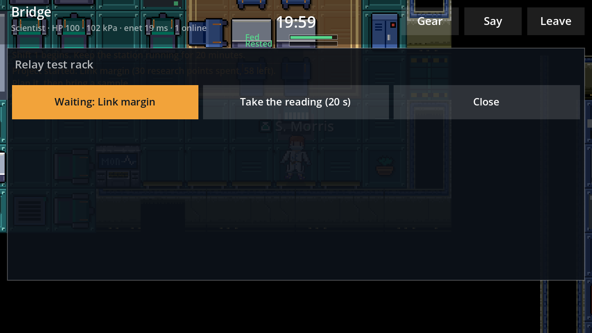

Millrace Station

The deep station: 50 rooms on three small decks under the sea, about as big all told as Heron. From the top: Crown (the Bridge and the command offices, the watch with its cells, the Advocate, and the living rooms: chapel, quarters, bar, mess room with the library shelf, kitchen and botanics), about twelve metres down; Dock (the Infirmary behind its public reception, surgery, morgue and chemistry, the sea lab, robotics and research, the moon pool, the Mining Sub and the disposal plant); and Keel (engineering: the power chain of the seabed current turbines, the workshops, air works, the stores and the dive airlock). The decks are joined by stairs, a lift for carts, a ladder down the moon pool and two cable risers; a ring of crawlways inside each hull holds the rooms' power panels and, for the rooms an engineer's card does not open, their remote air alarms. Door bands say the department: orange engineering, light blue medical, dark blue command, red watch, yellow stores, purple science, green botanics, white kitchen, brown bar, grey for everyone.
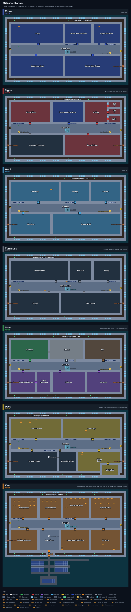
The decks, top to bottom
- Crown (deck 2), command, the watch and the law; the living rooms: botany, kitchen, mess room, bar, quarters and chapel: Crown Hall, Bridge, Station Master's Office, Registrar's Office, Communications Room, Watch Office, Holding, Cell 1, Advocate's Chambers, Chapel, Crew Quarters, Bar, Mess Room, Kitchen, Botanics, Crawlways by Crown Hall, Armoury, Interview Room, Cell 2, Cell 3.
- Dock (deck 1), medical and science, the moon pool, the mining sub and the disposal plant: Dock Hall, Sea Lab, Robotics, Chemistry, Infirmary, Infirmary Reception, Surgery, Morgue, Moon Pool Bay, Mining Dock, Disposal Plant, Research and Development, Crawlways by Dock Hall, Isolation Bay, Mining Sub, Toxins Bay.
- Keel (deck 0), engineering: the power chain, the workshops, air works, the stores and the dive airlock: Crawlways by Keel Hall, Keel Hall, Battery Room, Transformer Room, Power Control, Machine Workshop, Caretaker's Store, Dive Airlock, Construction Workshop, Air Works, Stores Counter, Stores Bay, Dive Lock.
Ways between decks
- Stairs S0: Keel to Dock
- Stairs S1: Keel to Dock
- Stairs S2: Dock to Crown
- Stairs S3: Dock to Crown
- Ladder L0: Keel to Dock
- Lift E1: every deck from Keel to Crown
- Cable riser R0: Keel to Dock
- Cable riser R1: Dock to Crown
Departments (floors are tinted, doors are banded) bar kitchen botanics watch science medical stores command engineering public crawlway door
Floors hallway or tube crawlways window solar panels power panel
Between decks stairs, ladder, lift (a dashed cyan pad) and cable riser are marked at both ends with the deck they lead to.
Machines amber badges: REQ request console, ORD order console, PAD delivery pad, FIL filing cabinet, CRW crew monitor, PWR power monitor, ATM atmos console, RAT ration dispenser, JOB job board, TAC tactical table, ID id console, AIR air tank filling point, PRS scrap press, SRV hull survey board, COL waste collector, RCY recycler, ARR array console, BAT battery console, INV inverter console, TRF transformer, SWG switchgear, CRN gantry crane, CTL charge controller, CEL battery cell, MOD inverter module, BRK breaker.
The rooms as a table
| Room | What is there | Who gets in |
|---|---|---|
| Crawlways by Keel Hall | — | Station Engineer, Miner and Caretaker (maintenance access) |
| Keel Hall | 1 service window with roll shutters, 2 closets, 3 benches | everyone |
| Battery Room | the battery bank (8 cells), the 4 inverter modules, 2 racks, 2 tables, 2 seats | Station Engineer (engineering access) |
| Transformer Room | the transformer, the switchgear (4 breakers) and the gantry crane, a rack, a winding bench, 2 tables, a closet, 2 seats | Station Engineer (engineering access) |
| Power Control | the power monitor, the array, battery and inverter consoles and the 4 charge controllers, 6 seats, 2 racks, a cabinet, 2 tables | Station Engineer (engineering access) |
| Machine Workshop | where the Station Engineer starts, 8 racks, a lathe, 4 tables, 4 seats, 2 closets | Station Engineer (engineering access) |
| Caretaker's Store | where the Caretaker starts, 6 racks, a prop, a closet, 2 tables, a storage crate | Station Engineer, Miner and Caretaker (maintenance access) |
| Dive Airlock | 3 benches, 3 racks | Station Engineer (engineering access) |
| Construction Workshop | 4 racks, 4 tables, 2 seats, a closet | Station Engineer (engineering access) |
| Air Works | the atmos alert console, 6 racks, 3 seats, a table | Station Engineer (engineering access) |
| Stores Counter | the request console, the order console, the filing cabinet, 1 service window with roll shutters, where the Storekeeper starts, 3 tables, 6 seats, a closet, 3 racks, 3 storage crates | Storekeeper and Miner (stores access) |
| Stores Bay | the delivery pad, 10 racks, 6 storage crates, 2 tables, 2 seats | Storekeeper and Miner (stores access) |
| Dive Lock | — | Station Engineer (engineering access) |
| Dock Hall | 3 benches, 2 closets | everyone |
| Sea Lab | 2 props, 3 seats, 3 racks, a table | Scientist (science access) |
| Robotics | 6 racks, 3 seats, 2 tables, a storage crate | Scientist (science access) |
| Chemistry | 8 racks, a prop, 3 seats, 2 tables | Medical Doctor (medical access) |
| Infirmary | 1 service window with roll shutters, the crew monitor, where the Medical Doctor starts, 5 seats, 3 racks, a closet, a prop, a table, a locked cabinet (medical access), a locked cabinet (medical access) | Medical Doctor (medical access) |
| Infirmary Reception | 1 service window with roll shutters, 4 benches | everyone |
| Surgery | 4 props, a cabinet, 3 seats, 2 racks, a closet, a table | Medical Doctor (medical access) |
| Morgue | 7 props, 2 tables, a rack, a closet, a seat | Medical Doctor (medical access) |
| Moon Pool Bay | 3 closets, 3 racks, a table, 3 benches | Station Engineer, Miner and Caretaker (maintenance access) |
| Mining Dock | where the Miner starts, 5 racks, 2 storage crates, 2 tables, 2 seats | Storekeeper and Miner (stores access) |
| Disposal Plant | 2 racks, a storage crate | Station Engineer, Miner and Caretaker (maintenance access) |
| Research and Development | where the Scientist starts, a cabinet, 2 tables, 2 racks, 4 seats | Scientist (science access) |
| Crown Hall | the ration dispenser, the job board, 1 service window with roll shutters, a prop, 5 benches, a closet, 2 seats, 2 tables | everyone |
| Bridge | the tactical table and 3 console repeaters, 2 benches, 9 seats, 2 tables | Registrar (command access) |
| Station Master's Office | where the Station Master starts, 5 seats, 3 props, 2 tables, a locked closet (command access), a locked closet (command access) | Registrar (command access) |
| Registrar's Office | 1 service window with roll shutters, the ID console, where the Registrar starts, 5 seats, 2 props, a rack, 3 tables | Registrar (command access) |
| Communications Room | 2 props, 4 tables, 2 seats, a rack | Registrar (command access) |
| Watch Office | where the Watch Officer starts, 4 closets, 3 seats, 2 tables | Watch Officer and Advocate (watch access) |
| Holding | 2 seats, 2 benches, 2 tables | Watch Officer and Advocate (watch access) |
| Cell 1 | 2 seats, a prop, a locked closet (watch access) | Watch Officer and Advocate (watch access) |
| Advocate's Chambers | where the Advocate starts, 3 props, 3 seats, 2 tables, 2 benches | everyone |
| Chapel | where the Chaplain starts, 4 benches, 2 props, 2 tables | everyone |
| Crew Quarters | where the crew sleeps, 10 seats, 8 closets, 2 props | everyone |
| Bar | where the Bartender starts, 2 racks, 6 seats, 4 tables, 2 bar mixers | Bartender and Hand (bar access) |
| Mess Room | 1 service window with roll shutters, a prop, 8 seats, 8 tables, 2 benches | everyone |
| Kitchen | 1 service window with roll shutters, where the Chef starts, 3 racks, 3 stoves, 3 tables, 3 seats, a closet, a prop | Chef (kitchen access) |
| Botanics | where the Botanist starts, 2 racks, 12 planting trays, 2 props, a storage crate, a locked cabinet (kitchen or botanics access) | Botanist (botanics access) |
| Crawlways by Dock Hall | — | Station Engineer, Miner and Caretaker (maintenance access) |
| Crawlways by Crown Hall | — | Station Engineer, Miner and Caretaker (maintenance access) |
| Isolation Bay | a seat, a prop | Medical Doctor (medical access) |
| Mining Sub | 4 seats | Storekeeper and Miner (stores access) |
| Mining Sub | 4 seats | Storekeeper and Miner (stores access) |
| Toxins Bay | a rack | Scientist (science access) |
| Armoury | a rack, a locked closet (all areas access) | Watch Officer and Advocate (watch access) |
| Interview Room | 2 seats, a table, a locked closet (watch access) | Watch Officer and Advocate (watch access) |
| Cell 2 | 2 seats, a prop, a locked closet (watch access) | Watch Officer and Advocate (watch access) |
| Cell 3 | 2 seats, a prop, a locked closet (watch access) | Watch Officer and Advocate (watch access) |
Research programme
The Scientist reads the map: this station's research programme is the shared topics (servo sets, pressure gasket, splint lattice, culture swab, sensor board, the Storekeeper's seabed sled and the shielded visor) and five of its own. A reading is taken in 20 seconds at the device, by anybody, with no item; a start costs research points out of the Directorate's grant and a release pays more back.
| Topic | Start / pays | Needs | Sample | Gives |
|---|---|---|---|---|
| Hull corrosion | 20 / 35 | none | a hull plate coupon left on the corrosion rack in the Sea Lab | Station Engineer: an anode strip (the wall it is fixed to wears half as fast); Station Master: a wear forecast in the Shift Audit |
| Current table | 25 / 40 | none | a rotor reading taken at the data terminals (a timed reading) | Station Engineer: a rotor balance kit; Watch Officer: a slack-water warning (a later phase) |
| Nodule assay | 30 / 45 | Servo sets | a seabed nodule taken by a diver or from the mine; assay in the Toxins lab | Miner: a nodule basket (a later phase: more per trip); Storekeeper: a nodule crate in the supply list (a later phase) |
| Pump rotor and seals | 35 / 55 | Pressure gasket, Shielded visor | a pump coupon run in the pressure pot | Station Engineer: a pump patch kit (a later phase) |
| Sea-light survey | 40 / 60 | Current table | a lamp and sound reading at the hydrophone console (a timed reading) | Miner: a survey lamp (a later phase); Station Master: a dive-window line in the Audit (a later phase) |
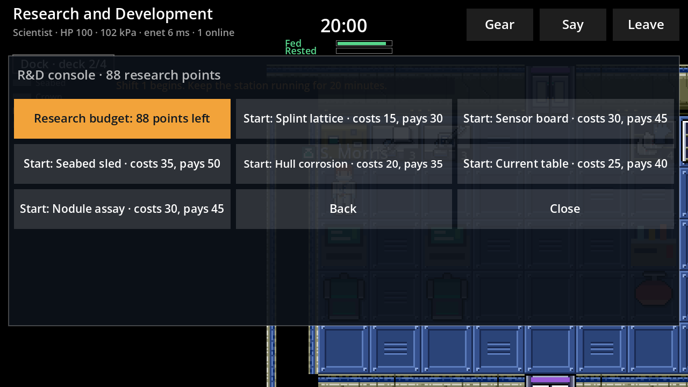
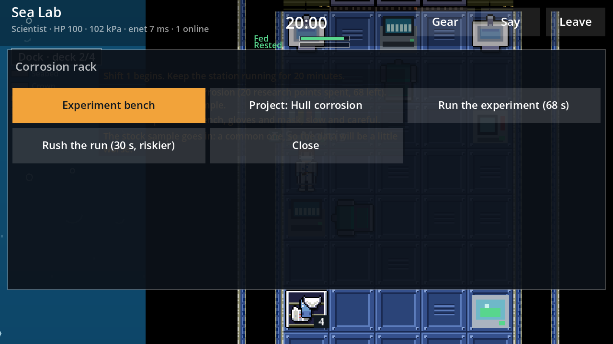


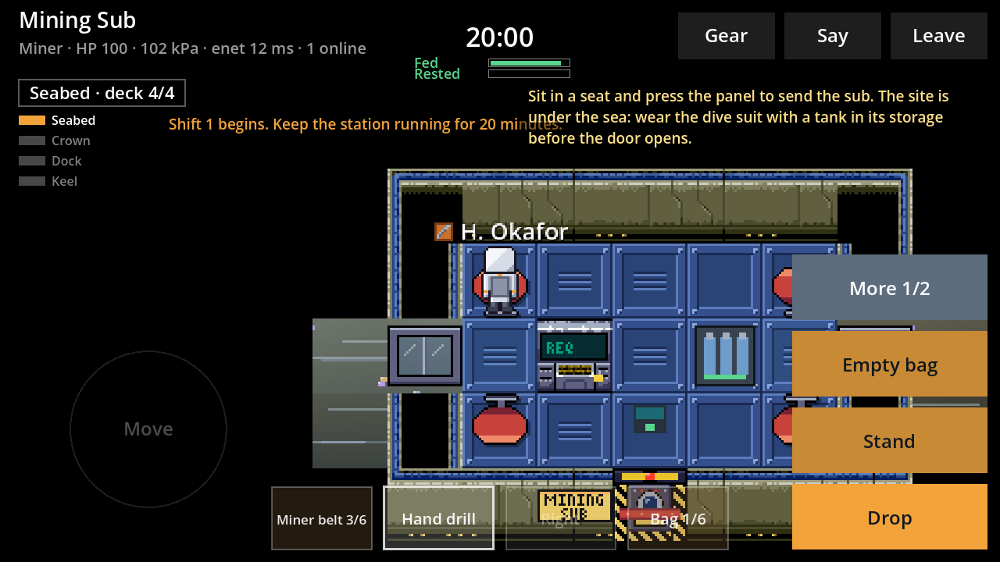


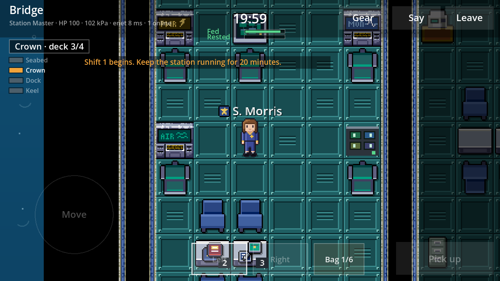
Cairn Station

The polar station on the Anvil, the last unmelted ice sheet: 76 rooms on two decks. The Surface holds the command, science, medical, watch and commons rooms, the food rooms, stores with the Sled Shed, and engineering with the genset, the battery bank, power control and the heat control; the Ice below it holds the drill dock and shaft, the core lab and store, the cold vault and cellar, the geothermal tap and the fuel store. The decks are joined by two flights of stairs and a lift. Three Windlocks (west, east and south) open on the ice yard round the station; a ring of crawlways and two service galleries hold the rooms' power panels and, for the rooms an engineer's card does not open, their remote air alarms. The power is four wind masts on the ice yard, a geothermal tap, a diesel genset with a fuel tank and a battery bank (see Power). The heat is one loop of glycol pipes from a boiler to the radiators of every room. The cold is the trouble:
- Cairn Station stands on the ice sheet, and the cold is the trouble. Every room has a temperature. The radiators (the heating loop, see Heat) warm a room towards its thermostat (a department 18 C, a hallway 15 C, a crawlway 2 C); the hull, a crack in it, a hole or an open outer door lets it fall towards the cold outside (-33 C on the surface, -8 C on the Ice deck); a wall passes some heat to the room beside it, an open door mixes the two rooms it joins, and a shut door insulates. So close the door behind you, and without power (a total blackout) the boiler stops and the station slowly freezes: a ward goes under 275 K in about ten minutes.
- The air alarm of a room says Warn below 0 C and Danger below -11 C (a crawlway may be colder: below -23 and -38). The room's tint on the map goes bluer the colder it is, and frost grows on the windows of a cold room.
- The Windlocks (west, east and south) are the way out: two doors with a vestibule between them. Keep one door shut while the other is open: an open outer door lets the cold into the vestibule, and two open doors let it into the hall. Outside the air is breathable and only cold; the yard round the station is ice. The racks of every Windlock hold the outdoor kit.
- On the open ice wear the outdoor kit: a parka, a beanie, warm gloves (budget or insulated) and boots (snow boots or work boots). Each missing piece lets more cold in, bare hands and feet freeze, and feet without boots may slip. Beside a rack, Put on outdoor kit puts on every missing piece and Take off outdoor kit hangs it back.
- The Chill is a meter under the clock (Warm, Cold, Numb, Freezing) with the temperature round you. It rises while the air is colder than 10 C by the difference over 65 a second; a parka indoors, or the whole outdoor kit on the ice, lets 20% of it through, a sealed suit 15%, a wind makes it faster; in a warm room it falls again. From 90 it hurts: 1 damage a second from cold (the burn pool, like any burn). A hot dish or drink takes some off. In a gale (wind 60 and over) the open ice is a whiteout and you see only 4 tiles round you, in white.
- Under the Chill every body has a core temperature, a number nobody sees but a health analyzer, which falls slowly while the Chill is high and rises in warmth. Hypothermia has stages: shivering (the Chill near 60), slowed (near 80: your steps and your work drag), confused and clumsy (near 95: slower still) and, at the limit, you collapse unconscious and die in 3 minutes unless someone warms you. The crew monitor says only cold of a body that is chilled.
- Frostbite comes to bare hands and bare feet on the open ice: warm gloves and boots keep it off, a parka alone does not. Nipped (after about 45 seconds bare) stings and slows work by 20 percent and passes in a warm room; frozen (after about 120) halves your speed and needs a doctor; left frozen for about 300 seconds the use of your hands and feet is lost for the shift until it is treated.
- Treatments: a hot dish or drink warms the core; Warm up (first aid, 8 seconds, indoors) rubs and wraps a patient; a heat blanket wraps one slowly; the heat lamps of the Ward and the Rewarming Bay warm whoever stands under them. The warm bath is best: a patient lies in a tub of the Rewarming Bay (a doctor helps a helpless one in) and Rewarm takes a minute, a Medical Doctor half of that. A frozen hand or foot needs the surgery kit and a warm saline bag: Treat frostbite on the patient (20 seconds). The health analyzer's last line reads the core temperature and the frostbite.
Food, the cold chain, the sled and the snow:
- Hot food warms the core: a hot dish or drink takes points off the Chill, raises the core and keeps it rising faster for a while (a ration stew 150 seconds, tea 45 seconds). The best meal is a ration stew, made on a stove from frozen rations, a potato and an onion; thawed rations make a thin stew that warms less.
- The cold chain: frozen rations keep in the Cold Cellar and the Cold Store and on the open ice (the air under 2 C), thaw after 2 minutes in a warm room and spoil 4 minutes later. An order of frozen rations at the request console arrives in an insulated crate that keeps its cold for 10 minutes outside a cold room, and every crate has a line in the Storekeeper's cold-chain ledger in Supply Reception. The thermometer board of the Cold Cellar lists the temperature of every room.
- A supply flight lands an insulated crate of frozen rations on the yard pad outside the south Windlock every 4 minutes (a storm holds it back): the ledger says when. The Storekeeper hauls it to Stores on the sled, a cart for the ice that carries 6 crates; drifts of snow across the sled lane stop it until the Caretaker's shovel clears them.
- Whoever comes in from the ice tracks snow in: a boot mat beside the door takes it (a mat holds 3 pairs of boots and then must be emptied), a drying room sheds it, and anywhere else it melts into a puddle the Caretaker mops. The winter garden (Botanics) grows under its lamps and slowly without them.
- The Station Master's fourth order closes every Windlock for 90 seconds (ready again after 5 minutes): only the Station Master's card opens the doors to the ice. The three levels keep their names, and on Cairn the Gale is the blizzard shelter; the Watch Officer patrols the yard and the Windlock routes, and the securibots stop at each Windlock.
The heating loop keeps the cold out:
- The heat of Cairn comes from one loop. The boiler in Heat Control (a heat exchanger run from its room's power) heats glycol, the circulation pump drives it along the supply pipe (red) to the radiators and back along the return pipe (blue), and a radiator is a floor grille in every heated room: it warms its room from the loop's temperature and flow, up to the room's thermostat. Without power the boiler and the pump stop; the loop's hot water then lasts a few minutes, and the rooms cool.
- The pipes run open in the crawlways and the plant room and hidden under the floor of the halls and departments: a crowbar lifts a floor tile to show them, a T-ray scanner shows the hidden ones to its holder. Every radiator has a valve (any hand beside it turns it) and the loop has an isolating valve; the Heat tab of the atmos console (Heat Control) lists the loop's temperature (62 C at the start), flow and glycol, the radiators by room, and every alarm: nothing is announced, the console is where the loop's trouble is read.
- When the loop fails (no flow, or the water under 7 C) the pipes of a room that stays below the freezing point of the glycol (-6 C at 12% glycol) for a minute freeze, a few tiles at a time. A frozen pipe blocks the flow and every radiator beyond it. If the pump pushes against one for 60 seconds it bursts: the line is cut until a Station Engineer fits a pipe into the gap with a wrench (a pipe is turned at the lathe). A frozen pipe thaws by itself once its room has been warm for 20 seconds, with a heat gun in 8 seconds, or by hot water standing against it: after a long outage switch the boiler on and set the pump to Low (a pump on Mid or High pushes and bursts the ice) and watch the Heat tab.

The decks, top to bottom
- Surface (deck 1), command, science, medical, watch, commons, food, stores and engineering: Crawlways by North Hall, North Hall, Mid Hall, South Hall, Windlock West, Windlock East, Windlock South, Bridge, Station Master's Office, Registrar's Office, Communications Room, Research and Development, Robotics, Sky Lab, Ward, Rewarming Bay, Chemistry, Surgery, Morgue, Library, Commons Hub, Caretaker's Store, Watch Office, Advocate's Chambers, Holding, Cell 1, Crew Quarters, West Hall, Restroom, Chapel, Crew Lounge, Bar, Kitchen, Botanics, Supply Reception, Storage Bay, Heat Control, Generator Shed, Battery Room, Power Control, Machine Workshop, Sled Shed, Construction Workshop, Boot Room, Drying Room, Drum Store, Met Hut, Crawlways by Commons Hub, Crawlways by Commons Hub 2, Crawlways by Construction, Armoury, Interview Room, Cell 2, Cell 3, Pantry.
- Ice (deck 0), the drill dock and shaft, core lab and store, cold vault and cellar, geothermal tap and fuel store: Ice Crawlways, Ice Hall, Core Lab, Culture Lab, Core Library, Cold Vault, Cold Cellar, Drill Dock, Shaft Gallery, Geothermal Tap, Fuel Store, Core Saw Room, Vault Antechamber, Seed Vault, Culture Vault, Cold Store, Miner Hut, Ice Locker, Core Intake, Drill Shaft, Tank Farm.
Ways between decks
- Stairs S0: Ice to Surface
- Stairs S1: Ice to Surface
- Lift E1: every deck from Ice to Surface
- Cable riser R0: Ice to Surface
- Cable riser R1: Ice to Surface
Departments (floors are tinted, doors are banded) bar kitchen botanics watch science medical stores command engineering public crawlway door
Floors hallway or tube crawlways window ice yard power panel
Between decks stairs, ladder, lift (a dashed cyan pad) and cable riser are marked at both ends with the deck they lead to.
Machines amber badges: REQ request console, ORD order console, PAD delivery pad, FIL filing cabinet, CRW crew monitor, PWR power monitor, ATM atmos console, RAT ration dispenser, JOB job board, TAC tactical table, ID id console, GEN generator, GEO geothermal wellhead, TNK fuel tank, PRS scrap press, SRV hull survey board, LDG cold-chain ledger, THM thermometer board, ARR array console, BAT battery console, INV inverter console, TRF transformer, SWG switchgear, CRN gantry crane, CTL charge controller, CEL battery cell, MOD inverter module, BRK breaker.
The rooms as a table
| Room | What is there | Who gets in |
|---|---|---|
| Crawlways by North Hall | — | Station Engineer, Miner and Caretaker (maintenance access) |
| North Hall | 11 benches, 6 props | everyone |
| Mid Hall | 14 benches, 6 props | everyone |
| South Hall | 7 props, 11 benches | everyone |
| Windlock West | a rack | everyone |
| Windlock East | a rack | everyone |
| Windlock South | a rack | everyone |
| Bridge | the tactical table and 3 console repeaters, 3 benches, 6 props, 4 seats, a table, a locked closet (command access) | Registrar (command access) |
| Station Master's Office | where the Station Master starts, 8 props, 2 seats, 3 tables, a locked closet (command access) | Registrar (command access) |
| Registrar's Office | the ID console, where the Registrar starts, 6 props, 2 seats, 4 tables, a locked closet (command access) | Registrar (command access) |
| Communications Room | 4 props, 5 seats, 3 tables, a rack | Registrar (command access) |
| Research and Development | where the Scientist starts, 6 props, 7 seats, 5 tables, a rack | Scientist (science access) |
| Robotics | 4 seats, 4 props, 2 racks, 4 tables | Scientist (science access) |
| Sky Lab | 4 tables, 4 seats, a rack, 6 props | Scientist (science access) |
| Ward | the crew monitor, where the Medical Doctor starts, 2 props, 7 seats, a rack, a locked closet (medical access) | Medical Doctor (medical access) |
| Rewarming Bay | 12 props, 2 racks, 2 seats | Medical Doctor (medical access) |
| Chemistry | 2 tables, 2 seats, 3 racks, a prop | Medical Doctor (medical access) |
| Surgery | 10 props, a seat, a locked closet (medical access) | Medical Doctor (medical access) |
| Morgue | 8 props, a rack | Medical Doctor (medical access) |
| Library | 7 props, 3 seats, 2 tables | everyone |
| Commons Hub | the ration dispenser, the job board, where the Hand starts, where the crew sleeps, 6 props, 25 benches, 2 stoves, 6 tables | everyone |
| Caretaker's Store | where the Caretaker starts, 3 racks | Station Engineer, Miner and Caretaker (maintenance access) |
| Watch Office | where the Watch Officer starts, 2 racks, 4 seats, 3 props, 3 tables, a locked closet (watch access) | Watch Officer and Advocate (watch access) |
| Advocate's Chambers | where the Advocate starts, 4 props, 3 seats, 4 tables | everyone |
| Holding | 6 props, 10 benches | Watch Officer and Advocate (watch access) |
| Cell 1 | 2 benches, a seat | Watch Officer and Advocate (watch access) |
| Crew Quarters | 7 props, 9 seats, a closet, a rack | everyone |
| West Hall | — | everyone |
| Restroom | 5 props, 3 seats | everyone |
| Chapel | where the Chaplain starts, 9 props, 8 benches | everyone |
| Crew Lounge | 2 stoves, 5 benches, a rack, 3 seats, 5 tables, 2 props | everyone |
| Bar | where the Bartender starts, 6 props, 4 bar mixers, 7 tables, 3 seats, a stove | Bartender and Hand (bar access) |
| Kitchen | where the Chef starts, 5 props, 2 stoves, a rack, 4 tables, 2 benches | Chef (kitchen access) |
| Botanics | where the Botanist starts, 10 props, 3 racks, 20 planting trays | Botanist (botanics access) |
| Supply Reception | the request console, the order console, the filing cabinet, where the Storekeeper starts, a rack, a closet, 6 props, 3 seats, 5 tables | Storekeeper and Miner (stores access) |
| Storage Bay | the delivery pad, 3 racks, 3 props, 2 storage crates | Storekeeper and Miner (stores access) |
| Heat Control | the atmos alert console, where the Station Engineer starts, a rack, 3 tables, 3 props, 2 seats | Station Engineer (engineering access) |
| Generator Shed | 4 racks, 5 props | Station Engineer (engineering access) |
| Battery Room | the battery bank (8 cells), the 4 inverter modules, 2 racks, 2 props | Station Engineer (engineering access) |
| Power Control | the power monitor, the array, battery and inverter consoles and the 4 charge controllers, the transformer, the switchgear (4 breakers) and the gantry crane, a rack, 3 tables, a winding bench, 2 seats, 2 props | Station Engineer (engineering access) |
| Machine Workshop | 4 props, 3 racks, a lathe, 4 tables | Station Engineer (engineering access) |
| Sled Shed | 9 props, 6 racks | everyone |
| Construction Workshop | 5 props, 3 racks, 3 tables | Station Engineer (engineering access) |
| Ice Crawlways | — | Station Engineer, Miner and Caretaker (maintenance access) |
| Ice Hall | 20 benches, 7 props | everyone |
| Core Lab | 5 props, 5 seats, 4 tables, a rack | Scientist (science access) |
| Culture Lab | 7 props, 4 seats, 5 tables, 2 closets | Scientist (science access) |
| Core Library | 8 storage crates, 5 props, 17 racks, a table | Scientist (science access) |
| Cold Vault | a table, 2 props, 2 storage crates, 3 racks, a locked closet (science access), a locked closet (science access), a locked closet (science access), a locked closet (science access) | Scientist (science access) |
| Cold Cellar | 4 storage crates, 2 props, a rack, a table | Chef (kitchen access) |
| Drill Dock | where the Miner starts, 5 storage crates, 5 racks, 8 props, a stove, a table | Storekeeper and Miner (stores access) |
| Shaft Gallery | 10 props | Storekeeper and Miner (stores access) |
| Geothermal Tap | 8 props, a rack, 3 tables | Station Engineer (engineering access) |
| Fuel Store | 5 props, 6 storage crates, a table | Station Engineer (engineering access) |
| Boot Room | 4 props, 4 benches, a rack | everyone |
| Drying Room | 4 props, 4 benches, a rack | everyone |
| Drum Store | 6 props, a storage crate, a table | Storekeeper and Miner (stores access) |
| Core Saw Room | a rack, a prop | Scientist (science access) |
| Vault Antechamber | 2 props, 2 seats, a table, 3 benches, a rack, a locked closet (science or botanics access) | everyone |
| Seed Vault | 8 props, 16 closets | Botanist (botanics access) |
| Culture Vault | 7 props, 3 closets, a table | Scientist (science access) |
| Met Hut | a table, 3 props, 2 benches | Scientist (science access) |
| Cold Store | 2 storage crates, 2 racks, a prop | Chef (kitchen access) |
| Miner Hut | a rack, 2 props, a stove, 3 seats, 4 tables, 3 benches | Storekeeper and Miner (stores access) |
| Ice Locker | 4 props, 3 storage crates | Storekeeper and Miner (stores access) |
| Core Intake | 5 props, a rack, a table | Storekeeper and Miner (stores access) |
| Drill Shaft | 16 props | Storekeeper and Miner (stores access) |
| Tank Farm | 12 props, a rack | Station Engineer (engineering access) |
| Crawlways by Commons Hub | — | Station Engineer, Miner and Caretaker (maintenance access) |
| Crawlways by Commons Hub 2 | — | Station Engineer, Miner and Caretaker (maintenance access) |
| Crawlways by Construction | — | Station Engineer, Miner and Caretaker (maintenance access) |
| Armoury | 2 racks, a prop, a locked closet (all areas access) | Watch Officer and Advocate (watch access) |
| Interview Room | 2 seats, a table | Watch Officer and Advocate (watch access) |
| Cell 2 | a seat, 2 benches | Watch Officer and Advocate (watch access) |
| Cell 3 | a seat, 2 benches | Watch Officer and Advocate (watch access) |
| Pantry | 3 racks, a prop | Chef (kitchen access) |
Research programme
The Scientist reads the map: this station's research programme is the shared topics (servo sets, pressure gasket, splint lattice, culture swab, sensor board, the Storekeeper's haul drone and the shielded visor) and five of its own. A reading is taken in 20 seconds at the device, by anybody, with no item; a start costs research points out of the Directorate's grant and a release pays more back.
| Topic | Start / pays | Needs | Sample | Gives |
|---|---|---|---|---|
| Ice core log | 18 / 30 | none | an ice core drilled by the Miner, cut on the core saw | a sharper bit that warms faster |
| Wind and drift | 25 / 40 | none | an anemometer log read in the Sky Lab (a timed reading) | a wind gauge and a forecast line at the radio |
| Heat loss | 30 / 45 | Servo sets | a wall coupon on the thermal rig | an insulating patch for one room |
| Glycol loop | 35 / 55 | Sensor board, Shielded visor | a glycol sample from Heat Control | a glycol can that restores a frozen branch |
| Cold chain | 40 / 65 | Shielded visor, Heat loss | a temperature log read in the Cold Vault (a timed reading) | a crate seal that keeps a crate cold |
On Cairn the topics are listed; their effects come in a later phase.


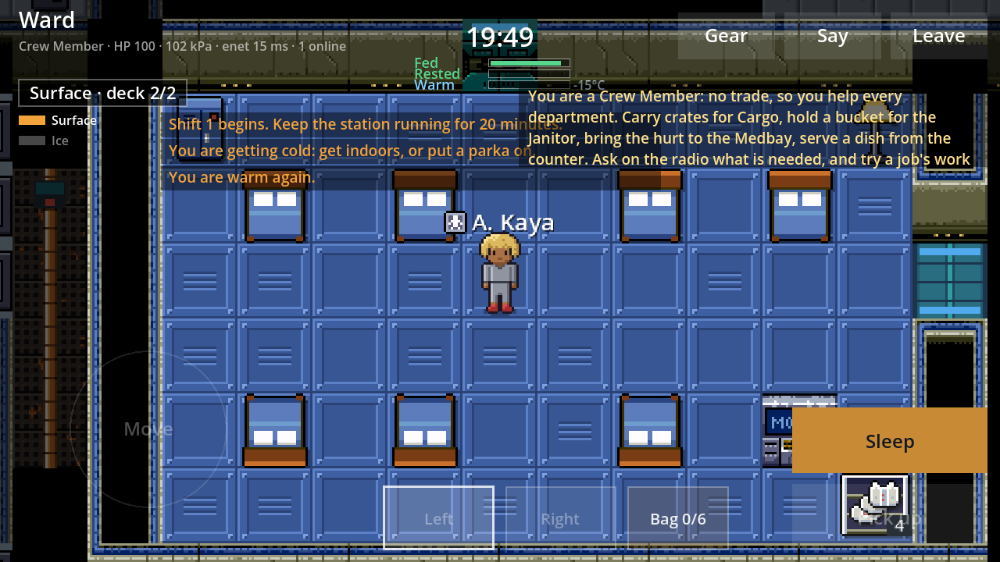
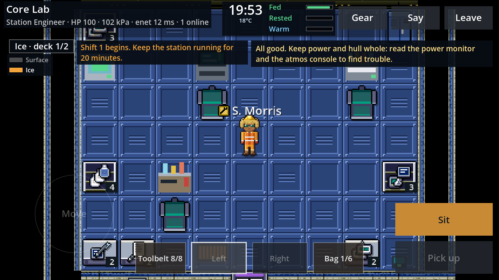
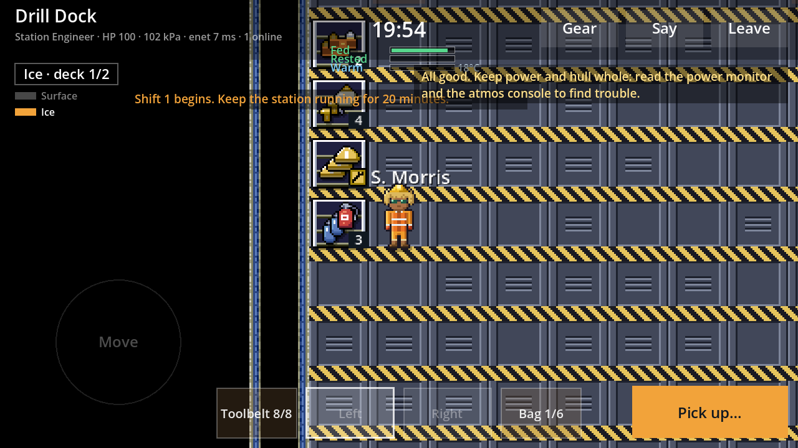


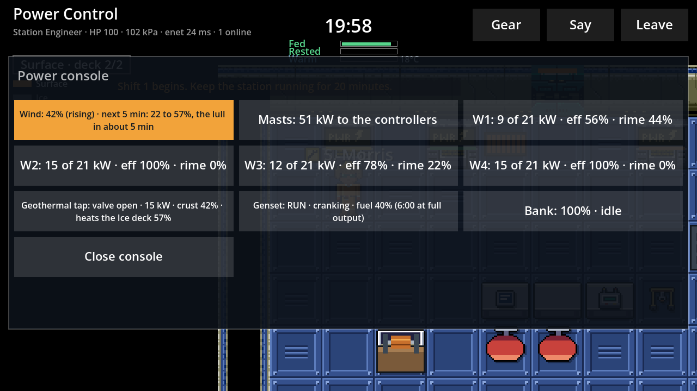
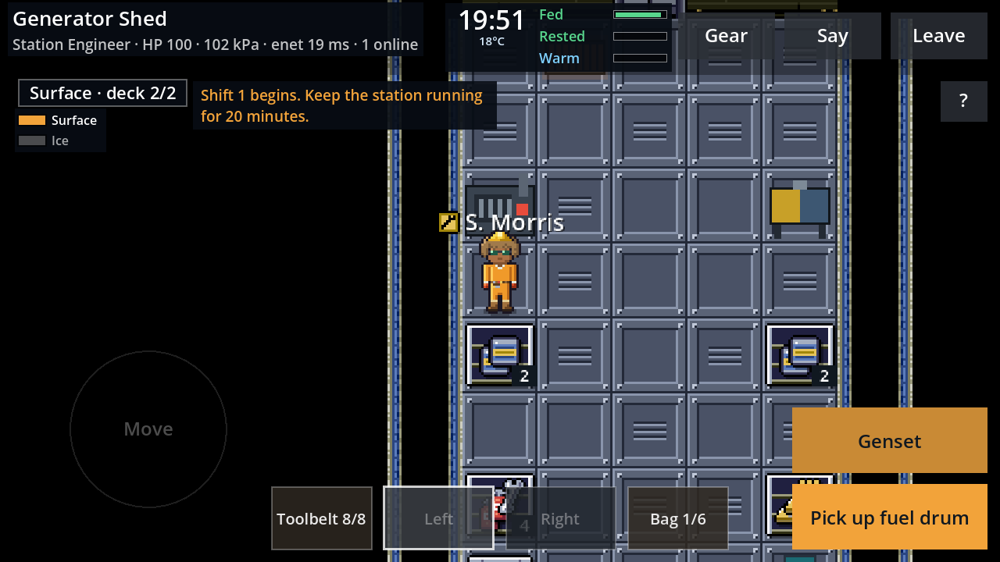
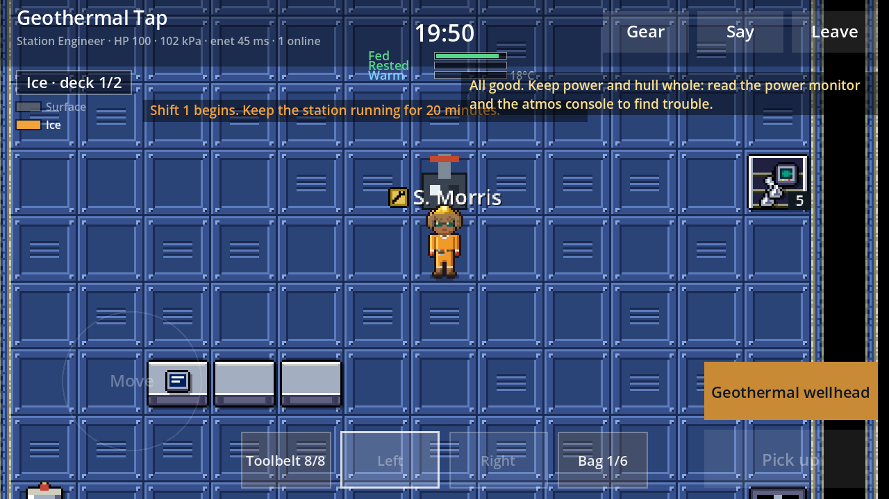
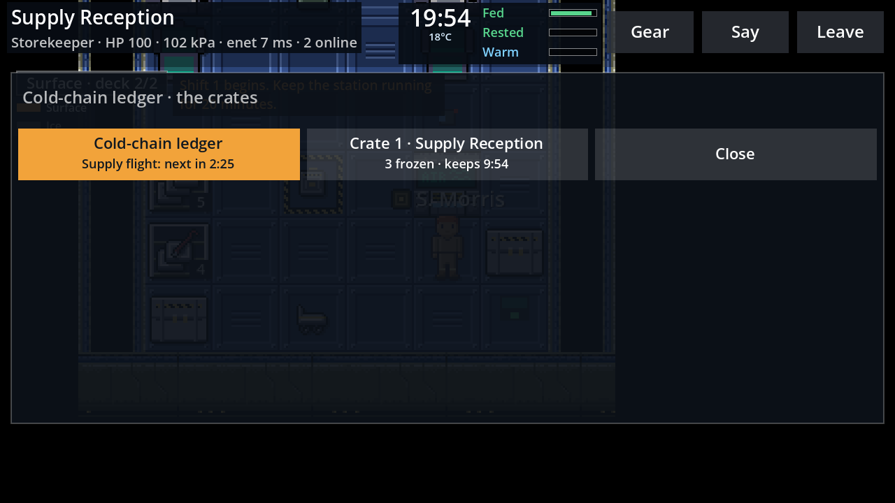